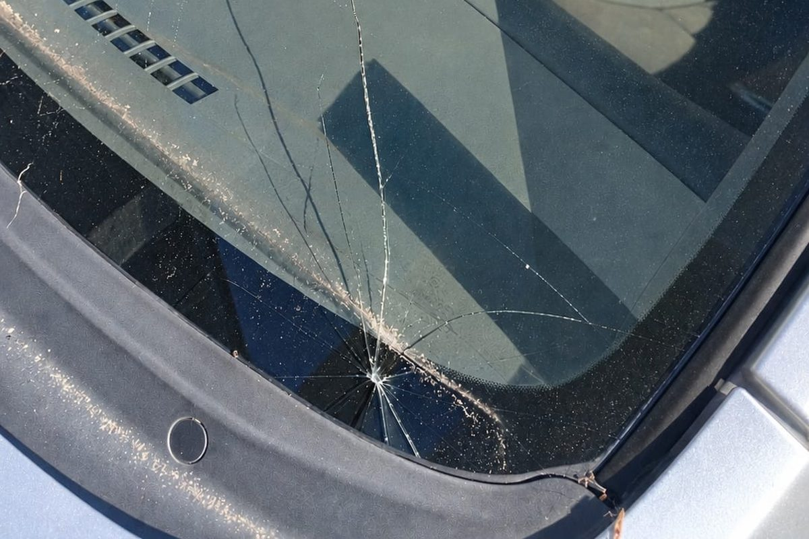

Auto Glass & Windscreen Repair in Wellington

A chip that’s looked at early has a better chance of being repaired. While the damage is still small, the surrounding glass is usually strong, which gets the best results for a repair before it spreads and turns into a crack. Our team of professionals will check it and can suggest a repair first. A windscreen replacement will be recommended when a repair can’t safely do the job. That keeps the work in proportion to the damage and we will recommend the best solution that your car needs.
A high-quality result is what we aim for. For a repair, that means the chip is properly cleaned, filled and sealed, the glass regains its strength, and the mark becomes far less noticeable. It also means a windscreen you can rely on when you’re back on the road.
We work effectively and efficiently, which means preparing properly, taking care with each step and not making the job more complicated than it needs to be. Fixing the chip before it grows keeps your original windscreen in place. We’ll explain the damage in plain terms and the fix we recommend, so you know exactly where you stand. You’ll understand what we found, why we’re suggesting it and what’s involved, before any work begins.